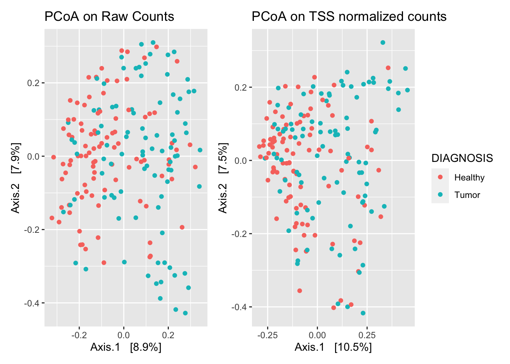
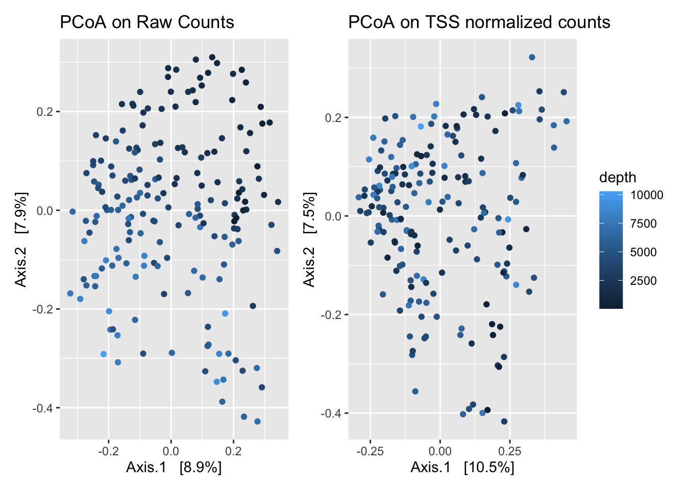

Chapter 5 DESeq
5.1 About DESeq
DESeq is a method for adjusting for differing library sizes. This method also can account for differences in library composition. This method has been called (MED) or (RLE) in the literature.
DESeq2 first takes the log (natural logarithm) of every entry in the count matrix. Due to this, all entries with zero will be set to negative infinity. Next, the row average is calculated (geometric average), so we have a vector of average counts for each taxon. Taking the log first should avoid undue influence by extreme outliers. All taxa with an average of infinity are removed. This step will remove all taxa with zero read count in one or more samples. This can be a problem in microbiome data. Next, we subtract the average log value from the log(counts), this gives a log ratio. This is equivalent to the ratio of the reads in each sample to the average across all samples. Next, we calculate the median of the log-ratios for each sample. These medians are converted to scaling factors for each sample by exponentiation. An extension of this method, denoted ‘poscounts’, has been suggested, which instead of taking the geometric mean of the logged counts for each taxon, we take the n-th root of the product of the non-zero counts.
This method assumes that the taxon of median absolute abundance is not differentially abundant, which is more likely true for the RNA-Seq it was developed for, but may not be true for microbiome studies, especially when there are more study groups, or we are analyzing higher taxonomic levels.
An additional option can be used to perform a variance stabilizing transformation on the count matrix before normalizing with the above size factors. This method calculates a dispersion-mean relationship and then transforms the data. The result ideally is an abundance matrix that is approximately homoskedastic or constant variance across the range of mean values. The package also includes an option for a ‘rlog’ transform, which they recommend over the variance stabilizing method in the case when there is a large difference in library sizes.
If differential abundance is of interest to calculate, DESeq uses a negative binomial distribution to model differential abundances. It is possible to provide the size factors calculated by another method to DESeq to perform differential analysis.
5.2 DESeq Implementation
norm_DESeq_RLE_poscounts <- function(ps, group = 1){
require(DESeq2, quietly = T)
# keep arbitrary design for normalization
# Convert to DESeq object
ps_dds <- phyloseq_to_deseq2(ps, ~1)
# Calculate the size factors (scaling)
ps_dds <- estimateSizeFactors(ps_dds, type = "poscounts")
# Extract counts
counts <- DESeq2::counts(ps_dds, normalized = T)
# Convert back to phyloseq
otu <- otu_table(counts, taxa_are_rows = T)
sam <- access(ps, "sam_data")
sam$scaling_factor <- sizeFactors(ps_dds)
tax <- access(ps, "tax_table")
phy <- access(ps, "phy_tree")
ps_DESeq <- phyloseq(otu,sam,tax,phy)
return(ps_DESeq)
}
norm_DESeq_vs <- function(ps, group = 1){
require(DESeq2, quietly = T)
ps_dds <- phyloseq_to_deseq2(ps, ~ 1)
ps_dds <- estimateSizeFactors(ps_dds, type = "poscounts")
# Variance transformation
ps_dds <- estimateDispersions(ps_dds)
abund <- getVarianceStabilizedData(ps_dds)
# don’t allow deseq to return negative counts
# add the minimum count to all values
# another option is to replace negative counts with 0
abund <- abund + abs(min(abund))
otu <- otu_table(abund, taxa_are_rows = T)
sam <- access(ps, "sam_data")
tax <- access(ps, "tax_table")
phy <- access(ps, "phy_tree")
ps_DESeq <- phyloseq(otu,sam,tax,phy)
return(ps_DESeq)
}5.3 DESeq on Global Patterns
Perform DESeq RLE normalization as well as DESeq variance stabalised transformation.
## converting counts to integer mode## converting counts to integer mode## gene-wise dispersion estimates## mean-dispersion relationship## -- note: fitType='parametric', but the dispersion trend was not well captured by the
## function: y = a/x + b, and a local regression fit was automatically substituted.
## specify fitType='local' or 'mean' to avoid this message next time.## final dispersion estimatesExamine principal coordinate plots between raw data and DESeq normalized data.
gp_raw_dist <- phyloseq::ordinate(gp_raw, "PCoA", "bray")
gp_rle_dist <- phyloseq::ordinate(gp_deseq_rle, "PCoA", "bray")
gp_vs_dist <- phyloseq::ordinate(gp_deseq_vs, "PCoA", "bray")
plot_ordination(gp_raw, gp_raw_dist, color = "SampleType", title = "Raw") +
plot_ordination(gp_deseq_rle, gp_rle_dist, color = "SampleType", title = "RLE") +
plot_ordination(gp_deseq_vs, gp_vs_dist, color = "SampleType", title = "RLE") +
plot_layout(guides = 'collect')
See how dissimilarity matrices differ from raw count dissimilarity matrices.

